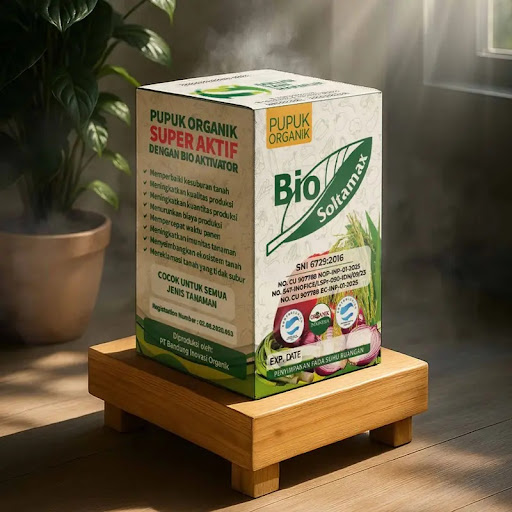

TAG K20 Organic Fertilizer
Organic potash from marine red algae to support flowering, fruit quality and stress tolerance.
View detailsOrganic fertilizers
Nurturing soil health and maximizing crop yield naturally, with organic fertilizers backed by clear product data.
Explore our products Send an inquiryMade from natural, organic-origin inputs for soil and crop nutrition.
Nutrient analysis and microbial counts are listed for each product.
Clear guidance and responsive support from inquiry to delivery.
What we do
PROMINENT JOIH Organic Products supplies organic fertilizers and soil-health inputs for growers who want strong yields while protecting the land they farm. Every product page lists its analysis, recommended use and application window, so you can choose with confidence.
Our range
Organic potash from marine red algae to support flowering, fruit quality and stress tolerance.
View details
A microbe-rich organic fertilizer that supports root development and soil biology.
View detailsWhy choose us
Guaranteed analysis and use guidance on every product.
Nutrition that also feeds soil life, not just the crop.
Application timing and rates matched to your crop stage.
Send an inquiry and get a direct, personal reply.
Tell us what you grow and we will recommend the right product and application.
Send an inquiry